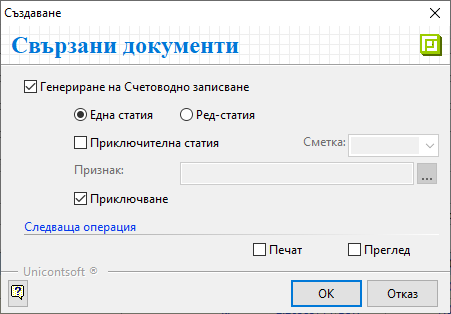

Складов документ#
Въведение#
Складовите операции се регистрират в системата с отделни складови документи. Могат да бъдат въвеждани ръчно и генерирани като свързани документи при определени условия.
Типът на документа се определя от процеса, който трябва да се регистрира за склада.
Основните типове складови документи са:
Документи за начални салда на склад - Приходен тип складови документи, с който се въвежда актуално състояние на наличностите в началото на избран отчетен период.
Приходни складови документи и депозитни разписки - Увеличават наличността в съответния склад с въведените количества по продукти.
Разходни складови документи и депозитни разписки - Намаляват наличността в съответния склад с въведените количества по продукти.
Нов складов документ#
1. Създаване
Складов документ се създава от Търговска система » Складови документи.
Празна форма за въвеждане на данни се отваря с десен клик и Нов документ, бутон [Нов документ] в лентата с инструменти или клавишна комбинация Ctrl+N.
2. Попълване на реквизити
В раздел Основни на формата за редакция се попълват:
Док. Тип - От падащия списък в полето се избира тип на документа. Това определя операцията като приход или разход за склада. Първоначално реквизитът се попълва с настройките по подразбиране.
Док. дата - В полето се избира датата, на която се извършва складовата операция. Спрямо тази дата системата дава пореден номер в Док. No след валидирането на документа.
По подразбиране в нов документ системата предлага текуща дата.Склад - От падащия списък в полето се избира склад, за който се отнася текущата операция.
Ако складът има направени настройки по подразбиране, системата може да обзаведе автоматично и реквизит МОЛ.Обект - Чрез реквизита се указва обект, за който се отнася текущата операция.
Съставил - В полето се посочва лицето, което съставя документа.
Полетата от секция Собствени се обзавеждат автоматично с настройките на текущия потребител в системата.
Контрагент - В полето се избира склад, консигнатор или физическо/юридическо лице, свързано със складовата операция.
В разходен складов документ се избира клиент, получаващ изписаните количества. В складов документ по покупка на стоки се избира контрагента-доставчик. В документ, отразяващ вътрешна операция за организацията (напр. липса, брак, излишък, НСС), в поле Контрагент се избира Потребител на продукта.
Останалите реквизити в секция Титуляр (МОЛ и Обект) се попълват автоматично с настройки за избрания контрагент. Могат да бъдат променени чрез падащите списъци за всяко поле.
{kind=link}
Чрез поле Продукт/материал на реда за нов запис се въвежда списък с продуктите, за които се регистрира движението в склада.
Продуктите трябва да са предварително въведени в системата. Отделни продукти могат да бъдат създавани и в процеса на работа (напр. при заприходяване на нов продукт). В такъв случай трябва да се вземе предвид, че за тези продукти все още няма складова наличност. Затова за тях не може да бъде валидиран разходен тип документ.
Количеството, с което всеки продукт участва в складовата операция, се въвежда от Количество.
Системата дава възможност за работа с партиди. В приходните складови документи те се въвеждат свободно от поле Партида. При регистриране на разход в същото поле се отваря форма за избор от вече наличните партиди в склада.
Ако се регистрират няколко партиди от един продукт, всяка от тях се въвежда на отделен ред.
В поле Мярка продуктите се отразяват с настроените им основни мерни единици. Често това е най-малката мярка, в която продуктът съществува в системата.
Oт поле Цена се въвежда eдинична стойност на всеки продукт. Цените винаги са без ДДС.
За разходните складови документи системата попълва автоматично среднопретеглени цени с приключването на документа.
3. Приключване
Складовият документ се валидира чрез бутон [Приключен] в лентата с инструменти.
Отваря се форма Свързани документи. В нея са достъпни следните опции:
Генериране на Счетоводно записване – при поставянето на отметка системата ще генерира свързан счетоводен документ;
За да се обзаведе коректно счетоводната статия, Автоматичен осчетоводител трябва да е предварително настроен.Една статия - при избор на тази опция се създава счетоводен документ с една статия и общ списък на продуктите (признаците);
Ред-статия - с тази опция се генерира счетоводен документ с множество статии, отделно за всеки продукт;
Приключителна статия - при тази опция, след избор на приключителна сметка и по желание Признак, системата ще генерира и приключителна статия в счетоводния документ;
Приключване - указва генериране на счетоводния документ с автоматично приключване;
Ако не бъде поставена отметка, се генерира счетоводен документ в състояние на редакция.
Печат или Преглед - Отваря се форма за избор на шаблон.
При избрана опция Печат документът се разпечатва директно с избрания шаблон.
При опция Преглед документът се отваря на екран преди отпечатване.[ОК] - Бутонът потвърждава направения избор и генерира свързани документи.

4. Запис и изход
Чрез бутон [Запис и изход] в лентата с инструменти документът се записва и формата се затваря.
При приключване документът се записва автоматично. В този случай бутонът единствено затваря формата.
Реквизити#
В раздел Основни:
Док. Тип – указва тип на документа;
Системата прилага дефинирания по подразбиране в Администрация » Настройки тип на документ.Док. No - в полето се попълва номер на документа;
Ако полето остане празно, системата автоматично попълва пореден номер при приключване на документа спрямо настройките в Номератори.Док. дата - указва дата за документа;
По подразбиране в нов документ системата предлага текуща дата.Склад - отваря падащ списък за избор на склад, за който се отнася складовата операция;
Системата прилага дефинирания склад по подразбиране.МОЛ - указва материално отговорното лице за избрания склад;
Полето се обзавежда с настройките по подразбиране за избрания склад.Обект - отваря падащ списък за избор на обект;
Списъкът трябва да е предварително настроени в контрагент Потребител на продукта.
Полето се попълва автоматично с настройките на текущия потребител.Съставил - поле с падащ списък за избор на персона;
Списък със служители трябва да бъде предварително настроен.
Данните в полето се попълват автоматично с настройките на текущия потребител.Контрагент – от полето се отваря форма Контрагенти за избор на склад;
МОЛ - поле за избор на материално отговорното лице от списък с персони;
Полето се обзавежда с настройките по подразбиране за избрания контрагент.Обект - поле за избор от списък с настроените за контрагента обекти;
От реда за нов запис се обзавежда списък с продукти.
Съдържа следните колони:Поверителност - дава информация за активирани Поверителност на цени и/или Поверителност на документ;
No. - пореден номер на запис по реда на въвеждане;
Група - полето показва група на продукта;
Миниатюра на продукт/материал - показва настроеното за продукта изображение по подразбиране;
Ред от пакетажен лист - в полето може да се избира ред, на който продуктът да участва в пакетажния лист;
Код продукт/материал - обзавежда се с настроения основен код за избрания продукт;
Баркод на продукт/материал - полето се обзавежда с баркод за продукта в избраната мярка;
Продукт/материал - отваря форма за избор Продукти и материали;
Допълнителен текст - въвеждане на описание за продукта на реда, което може да се показва при печат;
Забележка - поле за свободно въвеждане на уточняващ текст за продукта на ред;
Партида - избор на партида за продукт на реда;
От бутона в края на полето се отваря форма с налични партиди от продукта.Дата на годност на партида - указва дата на годност за партида на реда;
Страна на произход на партида - указва страна на произход за партида на реда;
Доставна партида - в полето може да се въведе допълнителна партида за продукт на реда;
Акциз за осн. мярка - полето показва стойност на акциз за единица продукт на реда;
Сериен номер на партида - в полето може да се въведе общ сериен номер за партида на реда;
АДД на партида - в полето има възможност за попълване на свободен текст с акцизен данъчен документ;
Серийни номера - указва сериен номер за продукт на реда;
Количество - в полето се попълва количество за продукта на реда;
Заявено количество - показва оставащо количество за усвояване от свързан документ за покупка или продажба;
Мярка - отваря падащ списък за избор на мерна единица от настроените за продукта;
Цена - поле за попълване на единична цена без ДДС;
Допълнителна мярка - показва настроената допълнителна мерна единица;
Отношение на мерки - показва фасети на мерки за допълнителната мерна единица;
Количество в две мерки - показва количеството на пълните единици в допълнителна мярка и на остатъка - в основна мярка;
Бруто тегло - показва бруто тегло за количеството от продукта на реда;
Бруто обем - показва бруто обем за количеството от продукта на реда;
Обща стойност - обща стойност без ДДС за количеството продукти на реда;
Включен акциз - дава информация с включен акциз за продукта;
Валута - отваря падащ списък за избор на валута;
Разполагаемо кол. - поле с информация за свободни количества на склад;
Наличност на склад - поле с информация за налично количество (общо или за избран склад), включващо резервираните количества;
Наличност на склад към дата на документа - показва наличност към избрана различна дата;
Данните се обзавеждат след активиране на опция Наличност към дата на документа от меню Средства.Запазени в склад - показва резервираните количества за продукт на ред;
Складови локации - показва разположение на продукта по складови локации;
Рецепта - в полето се отваря форма за избор от настроените рецепти;
Брой полуфабрикати в рецептата - съдържа информация за настроени по рецепта полуфабрикати;
Разлика с количества от Покупки - показва разликата между количеството в свързана покупка и текущ документ;
Разлика с количества от Продажби - показва разликата между количеството в свързана продажба и текущ документ;
Бракувано количество - указва бракувано количество за продукт на реда;
Транспортни единици - дава информация за вид на транспортните единици, използвани при производство;
Данните се въвеждат през Dreem Mobile.
Транспортните единици трябва да бъдат предварително настроени в Номенклатури » Референтни номенклатури.Потребител създаване - информация за потребител, добавил текущия ред в документа;
Дата създаване - дата и час на добавяне на текущия ред;
Потребител последна модификация - потребителско име на направилия последните корекции в данните на реда;
Дата последна модификация - информация за дата и час, когато са направени последните изменения в данните на текущия ред;
В раздел Допълнителни:
Реквизити: Печат
Ценова листа - указва Цена с ДДС в бланка SG04-Складов док. по ценова листа при отпечатване на складов документ;
Брой палети - указва броя на включените палети при отпечатване на документ Пакетажен лист;
Реквизити: Събиране
Валидиране - показва статус на валидиране на документа;
Дата на събиране - показва дата на събиране на стоки за издължаване от склада;
Приоритет - указва приоритет за валидиране на документа;
Реквизити: Мобилни устройства
Начало обработка - показва дата и час на начало на обработка;
Край обработка - показва дата и час на край на обработка;
Колектор - указва персона от настроените за Потребител на продукта, която събира продуктите по документа;
Проверяващ - указва персона от настроените за Потребител на продукта, която извършва проверка на събраните продукти по документа;
Контейнери - показва в кои контейнери в пикинг зоната са събраните продукти по документа;
Брой пакети - показва в колко на брой пакети са събрани продуктите по документа;
Бруто тегло - кг - показва бруто тегло след пакетиране;
Реквизити: Производство
Оператор - указва персона, която е определена да работи на избраната производствена линия;
Производствена линия - указва производствената линия (машина), на която да се произвеждат участващите в документа продукти и количества;
Реквизити: Други
Направление - използва се в Автоматичен осчетоводител при осчетоводяване на документа;
Подизпълнител - указва контрагент, който е подизпълнител в сделката;
Не се използва никъде от системата.Номер на документ за външни системи - показва номера на документа за външни системи;
Дата на документ за външни системи - указва дата на документа за външни системи;
В раздел Списъци:
Списъци
Направления - В тази секция системата показва списък с всички продукти, въведени в текущия документ. Те могат да бъдат разпределени като приход/разход към структурни центрове на себестойност, обект/проект и/или финансова структура.
Прикачени файлове - От поле Файл на реда за нов запис се отваря форма за избор Медия каталог. Прикачени файлове се добавят чрез каталога, предварително настроен от Номенклатури » Медия каталог.
Пакетажен лист - В секцията могат да бъдат въведени данни, необходими за печат на пакетажен лист.
Палетизация - В тази секция системата дава възможност за разпределяне на количествата по продукти към избрани транспортни единици и транспортни палети.
В раздел Връзки с документи:
Този раздел не съдържа реквизити за настройка. В него системата осигурява пряк път до свързани документи. От тук те могат да бъдат отворени и редактирани.